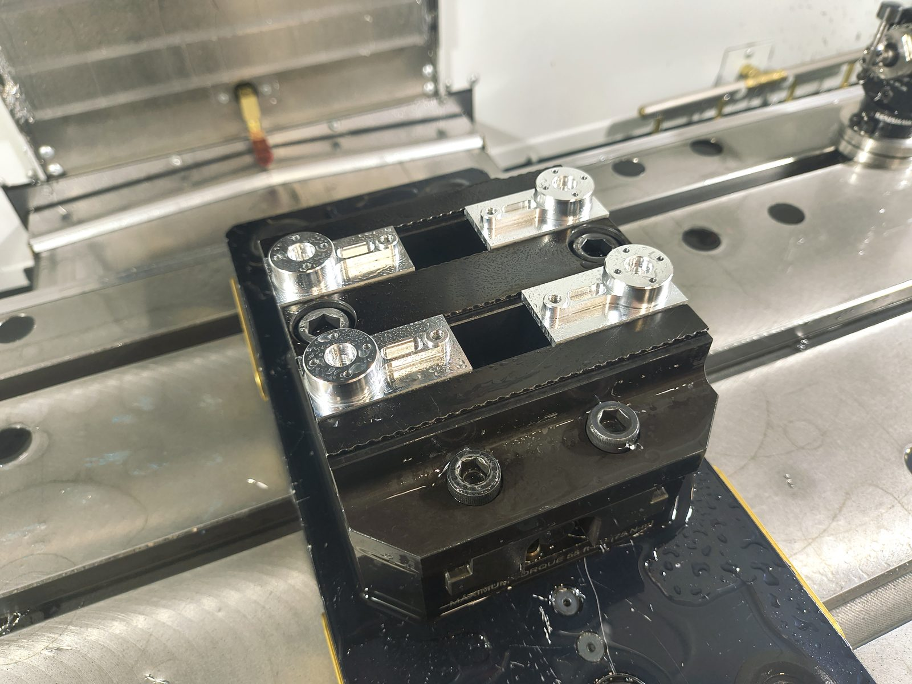
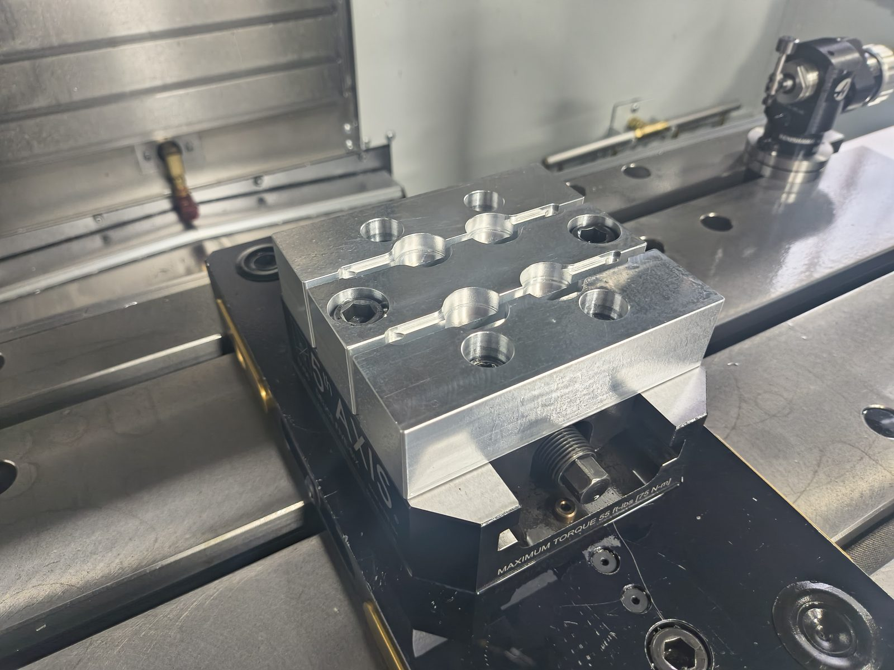
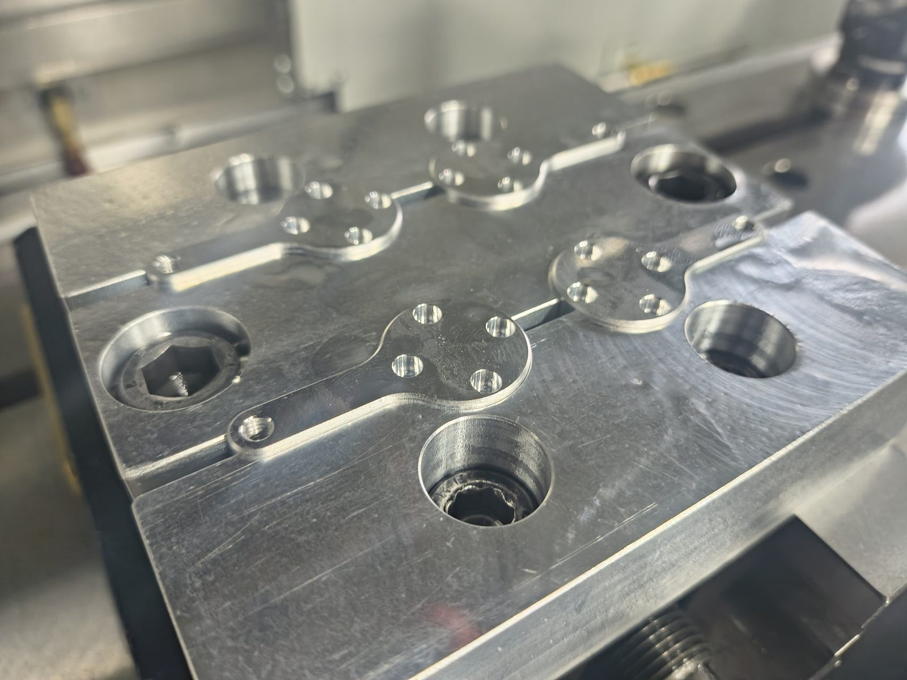
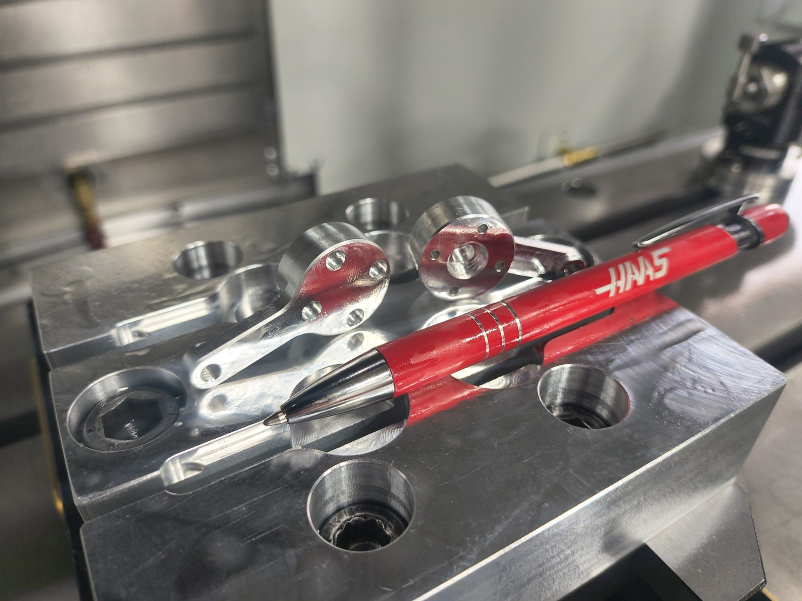
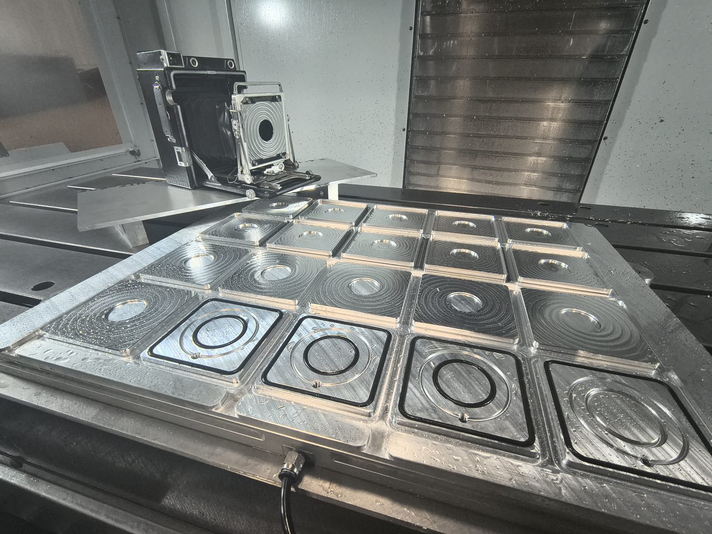
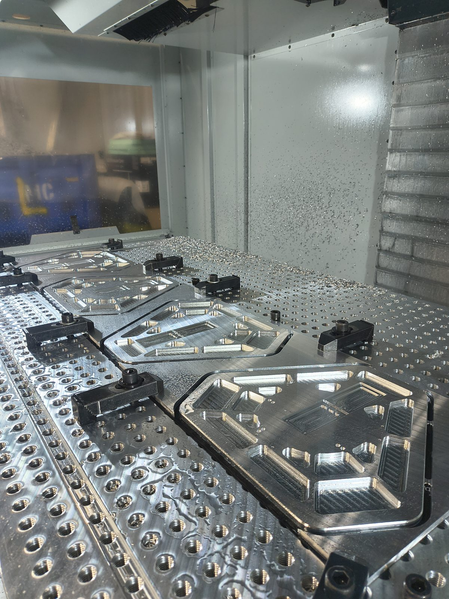

CNC · CAM · DFM
CNC Design & Production
Since 2021 I've worked at SK Grimes, a small shop that does specialized camera repair and modification. I design custom parts in SolidWorks, program them in CAMWorks, and cut them on a 3-axis mill and CO2 and fiber lasers. Below are three jobs and the workholding behind them.
- Machines
- 3-axis mill · CO2 & fiber laser
- CAD / CAM
- SolidWorks · CAMWorks
- Workholding
- Soft jaws · vacuum · fixture plates
- Where
- SK Grimes, 2021–present
A lot of the work here comes down to workholding: how to hold the part for each operation so it comes off the machine finished, repeatable, and without hand rework. These three jobs show the range, from a small two-operation part to fixtures I built for the shop.
Two-operation part with soft jaws
A small aluminum part machined in two operations. Op 1 cuts the top side in standard jaws. For op 2 I machined soft jaws with pockets matching the part profile, so each part drops in flipped and located, and the back side can be finished without re-indicating.
Add material, quantity, the tightest tolerance, and anything that made it tricky (thin web, thread, feature-to-feature position).




Vacuum fixture for large-format lensboards
A machined vacuum fixture for making lensboards for a large-format press camera (shown in the background). Both operations run on the one fixture. There are separate O-ring-sealed stations for op 1 and op 2, so a full batch of boards goes through both sides with no clamps marking the faces.
Add batch size per run, how vacuum hold was checked (cut forces vs. holding force), and how long one cycle takes.

60 × 30 in fixture table and tabbed plates
I built a 60 × 30 in fixture table for the mill: a tapped-hole grid plate that clamps take straight down onto. Here it's holding stock for a set of prototype plates. I left tabs between the plates so the whole sheet stays one piece while it's machined, which keeps the parts from shifting or flying loose on the final contour. Afterward the plates break out and the tabs get cleaned up.
Add the hole grid pitch and thread, how you kept it flat across 60 in, and tab size and how you remove them.
